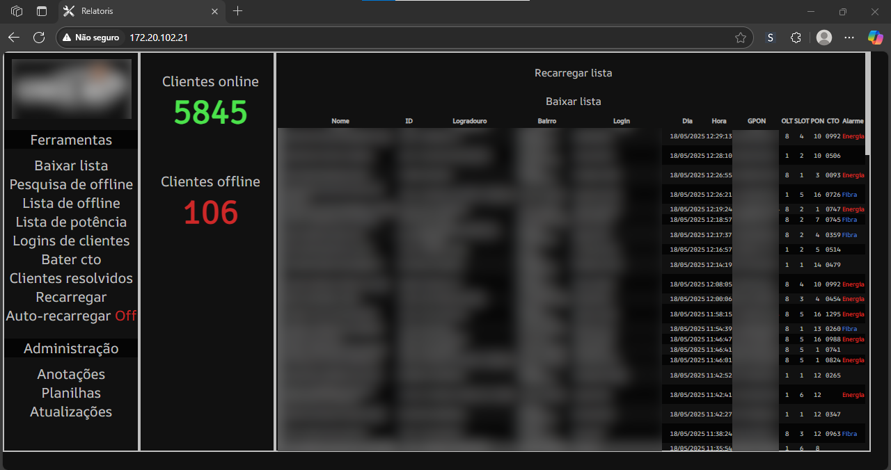

Portfólio
Relatoris
- O primeiro, e até o momento único, projeto profissional que fiz.
O Relatoris é uma ferramenta simples que faz uma interface
com diferentes bancos de dados para centralização e tratamento de dados.
- Como trabalho em uma empresa de telecomunicações de pequeno porte, havia uma
necessidade muito alta de alguma ferramenta para realizar diagnósticos rápidos de
rede assim que entrei. Apesar de haver ferramentas disponíveis para realizar tal
diagnóstico, elas não forneciam detalhes como localização dos clientes afetados por
problemas nem a natureza do problema.
- Desenvolvido usando Javascript e PHP, esse aplicativo web automatiza todos os processos que eram manuais e, ao atualizar os dados, o usuário tem uma visão completa do estado atual da rede, podendo dizer com precisão a localização de onde problemas ocorreram, assim como horário e natureza do problema em questão de segundos.

Imagem do aplicativo
( Informações sensíveis como nome, endereço e logotipo da empresa censurados )